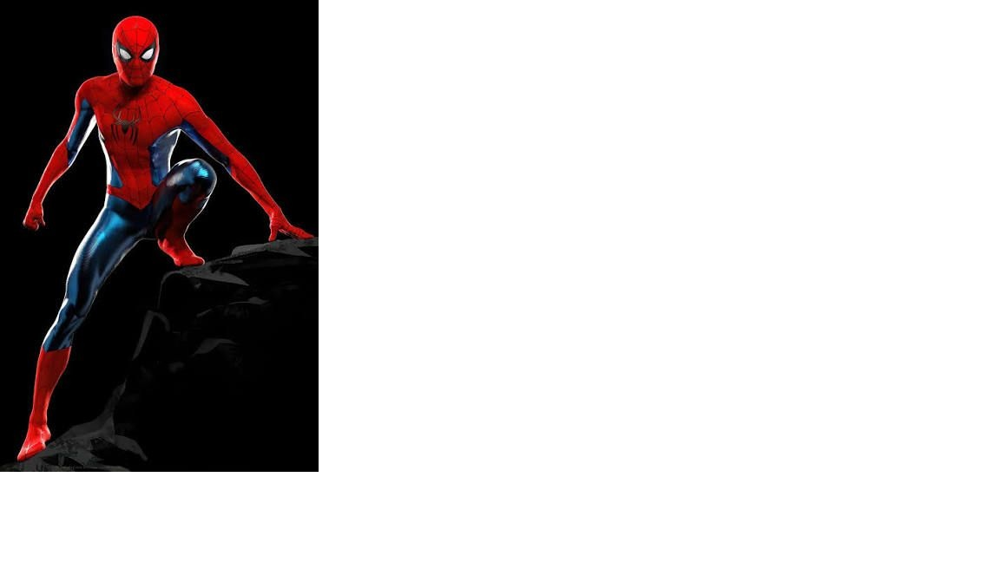
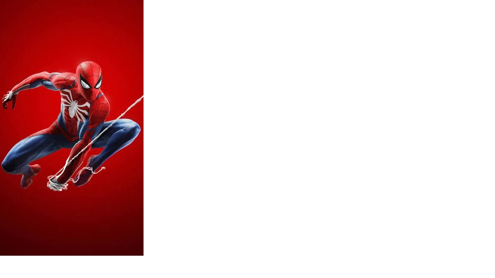

Peter Parker era un estudiante común hasta que fue mordido por una araña radiactiva en una exposición científica. Desde ese día, su vida cambió por completo.
Al descubrir que tenía poderes sobrehumanos, decidió utilizarlos para ayudar a los demás, guiado por la frase de su tío Ben: “Un gran poder conlleva una gran responsabilidad”.
 | Aspecto | Detalle |
|---|---|
| Nombre real | Peter Parker |
| Ciudad | New York |
| Poderes | Agilidad, fuerza, sentido arácnido |
los poderes: La mordedura le otorga fuerza sobrehumana, agilidad, la capacidad de adherirse a las paredes y un sentido arácnido que le avisa del peligro. También desarrolla un lanzador de telarañas gracias a su conocimiento científico. La responsabilidad: Tras darse cuenta de sus poderes, los usa para ganar dinero en la lucha libre. Sin embargo, al dejar escapar a un ladrón que luego asesina a su tío Ben, comprende la lección: con gran poder viene una gran responsabilidad.